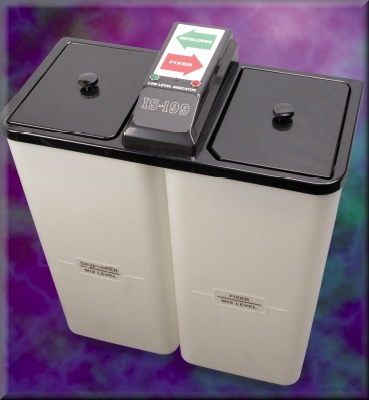

Chemical Mixers

| Stock # | Description | Chemistry Type | Your Price |
|---|---|---|---|
| 19945 | Standard 15.5 Gal | T2 Developer/T2 Fixer | $996.58 |
A versatile Chemical Mixer for use with: X-Ray Graphic Arts Photo Products One year warranty on all parts Technical Specifications The IS-199 incorporates a unique combination of features which make it the Mixer of Choice for both the user and the serviceman. The Specific Gravity Mixing System allows the user to start a mix anytime. The mixer responds to the addition of concentrated chemicals and adds the correct amount of water automatically. All Electronic Components have been chosen for dependability. Straight-forward circuit designs eliminate the need for circuit boards thereby increasing reliability. The Low Level Warning System indicates that solution level is 2.0 gallons or less. The warning system resets